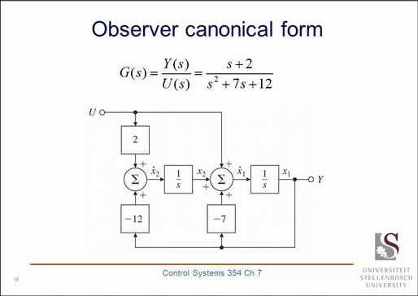
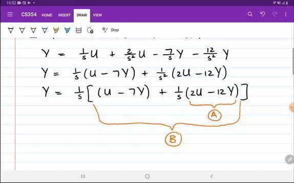
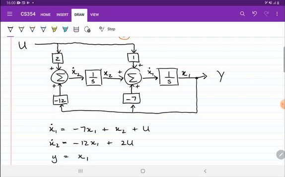
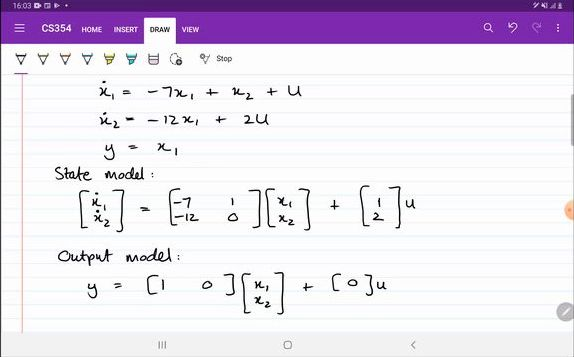

Example: a transfer function in observer canonical form
How to turn \(G(s) = \dfrac{s+2}{s^2+7s+12}\) into an observer canonical block diagram by algebra alone, and then read the state and output model off the diagram.
01In the video
02The task
00:00 to 00:42
The video realises the second-order transfer function below in observer canonical form, both as a block diagram and as a state and output model. It shows the finished diagram first (the slide), then builds it by hand.
- \(Y(s),\,U(s)\)
- Output and input.
- \(s^2 + 7s + 12\)
- Denominator: \(a_1 = 7\), \(a_2 = 12\) in the notation of the notes.
- \(s + 2\)
- Numerator: \(b_1 = 1\), \(b_2 = 2\).

Frame 00:04: U feeds both summing junctions (through gains 2 and 1); \(y\) is fed back to both through −12 and −7. The rest of the video derives exactly this picture.
03Rearranging \(G(s)\) into powers of \(1/s\)
00:42 to 01:47
The trick behind the observer form: write \(Y\) as integrals (powers of \(1/s\)) of combinations of \(U\) and \(Y\). Each \(1/s\) becomes one integrator in the diagram.
04Naming the signals A and B
01:47 to 02:23
Each bracket is a signal the diagram has to build. The inner one is called \(A\) and the outer one \(B\):
- \(A\)
- Output of the first summing junction; it feeds the first integrator.
- \(B\)
- Output of the second summing junction; it feeds the second integrator.
- \(Y = B/s\)
- The output is the second integrator's output.

Frame 01:48: The last line is the one to remember: the inner bracket (A) sits inside one more \(1/s\) than the outer one (B), so it is built first, at the far end of the integrator chain from the output.
05Drawing the block diagram
02:23 to 04:58
Two factors of \(1/s\) mean two integrator blocks, each fed by its own summing junction:
- Draw summing junction 1 → \(1/s\) → summing junction 2 → \(1/s\) → \(y\). Junction 1 produces \(A\), junction 2 produces \(B\), and \(B/s = y\).
- Build \(A = 2U - 12Y\): the input through a gain of 2, and the output fed back through −12, both into junction 1.
- Build \(B = \tfrac1s A + U - 7Y\): the first integrator's output, the input through a gain of 1, and the output fed back through −7, all into junction 2.
The result is the slide at 00:04. The input is spread over every integrator and the output is fed back to every integrator, which is the observer-form pattern of Figure 3.1 in the notes.

Frame 06:18: The integrator outputs are labelled as the states (section 6). The equations underneath are read straight off the two summing junctions.
06Choosing the states
04:58 to 06:27
The states are always the outputs of the integrators, and their derivatives are the integrator inputs. In observer canonical form they are numbered in the reverse order to control form:
- \(x_1\) is the output of the last integrator, so \(x_1 = y\) and \(\dot x_1 = B\).
- \(x_2\) is the output of the first integrator, so \(\dot x_2 = A\).
Each state equation may contain only states and the input. Substituting \(y = x_1\):
- \(\dot x_1 = B\)
- \(B = \tfrac1sA + U - 7Y\) with \(\tfrac1sA = x_2\) and \(Y = x_1\).
- \(\dot x_2 = A\)
- \(A = 2U - 12Y\) with \(Y = x_1\).
- \(y = x_1\)
- The output is the last integrator's output.
Numbering the states the other way round (first integrator as \(x_1\)) gives a valid model, but not the observer canonical form: \(\mathbf{A}\) comes out as \(\mathbf{A}_o\) with its rows and columns swapped, and \(\mathbf{C}\) becomes \([0\;\;1]\).
07The state and output model
06:27 to 08:29
Write the equations of section 6 in matrix form by inspection: each row of \(\mathbf{A}\) holds the coefficients of \(x_1, x_2\) in one state equation, and \(\mathbf{B}\) the coefficients of \(u\).
- \(\mathbf{A}_o\)
- First column holds \(-a_1, -a_2\); ones on the superdiagonal.
- \(\mathbf{B}_o\)
- The numerator coefficients \(b_1, b_2\).
- \(\mathbf{C}_o\)
- Picks out the last integrator's output.
- \(D\)
- 0: \(G\) is strictly proper.

Frame 08:12: The same matrices as in the box above. The video ends here (8:29) after summarising the route: transfer function, block diagram, state and output model.
08Checks
09Takeaways
1. Rearrange \(G(s)\) so that \(Y\) is a nest of \(1/s\) factors around combinations of \(U\) and \(Y\); each \(1/s\) is one integrator. 2. Each bracket is the output of a summing junction. 3. States are the integrator outputs, numbered from the output end (\(x_1 = y\)). 4. Read \(\mathbf{A}\) and \(\mathbf{B}\) off the junctions: the denominator coefficients appear negated in the first column, the numerator coefficients in \(\mathbf{B}\). 5. Check by transposing the control form.
Back to the notes: Week 7, section 3, observer canonical form.